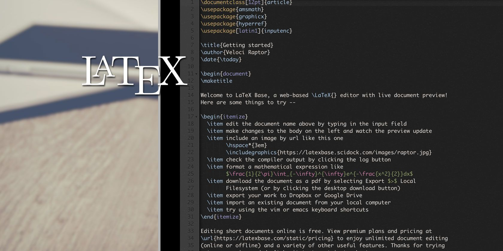

Introdução
LaTeX é um sistema de preparação de documentos de alta qualidade, especialmente voltado para textos científicos e técnicos. Ele permite a criação de documentos com fórmulas matemáticas complexas, tabelas e figuras de forma organizada e profissional.
Definição
Diferente de processadores de texto tradicionais, como Word ou LibreOffice, LaTeX utiliza um formato de marcação baseado em comandos de texto. O usuário escreve o conteúdo junto com instruções de formatação, e o LaTeX compila o documento final em PDF ou outros formatos.
Uso Básico
O uso básico de LaTeX envolve escrever um arquivo de texto com extensão .tex, inserir
comandos para formatar títulos, seções, listas, equações e figuras, e então compilar o arquivo para
gerar o documento final.
- Criar um arquivo
.tex - Adicionar texto e comandos de formatação
- Compilar o arquivo para gerar PDF
Objetivo do LaTeX
O principal objetivo do LaTeX é permitir que o usuário se concentre no conteúdo, enquanto o sistema cuida da formatação, garantindo consistência e profissionalismo em documentos acadêmicos e técnicos.